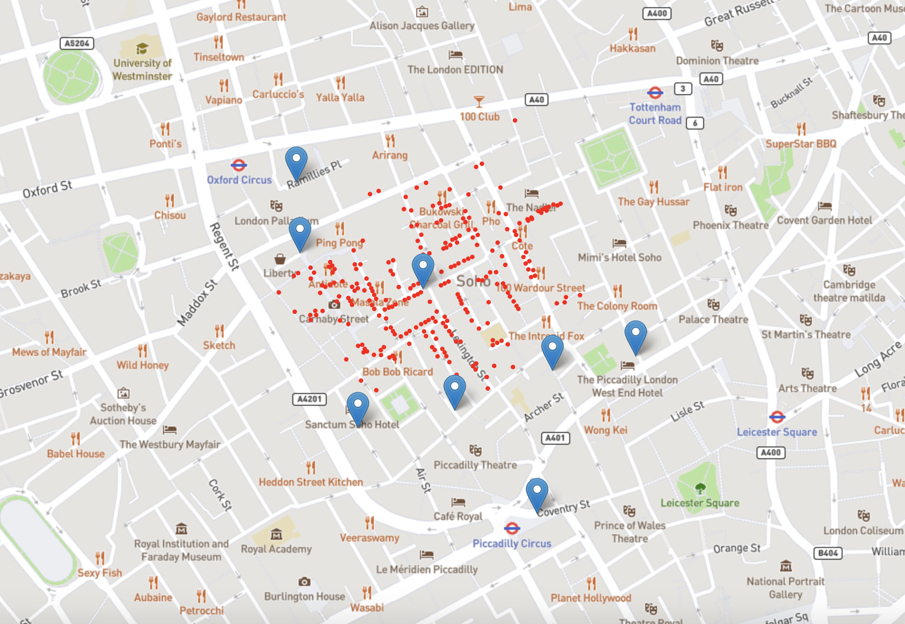

The table above contains data collected on the Cholera outbreak in London in 1854. More specifically, it shows the attacks and deaths per day, and the cumulative attacks and deaths up until that date. An attack is when someone exhibits symptoms of Cholera.
The scatter line plot above features the same information we saw in the table we had seen before. The two green lines represents attacks, with the lighter green line representing the attacks that were recorded on that date and the darker green line represents the cumulative attacks. Similarly, the red lines represent deaths where the lighter red line is the deaths recorded on that date and the darker red line represents the cumulative deaths.
This table shows the male and female deaths in Naples in the period 1884 through 1911. The number under the 'Female' and 'Male' columns is the amount of deaths per 10,000 inhabitants of that age group.
This table shows data from the UK census in 1851. It categorizes UK's population by gender and age group. It shows both, the total amount of people belonging to each age group as well as the amount of males and females in each age group.
The two pie charts above is another representation of the UK Census data shown in the table we saw before. First pie chart isolates the male population of the UK and categorizes the males by age group. The second pie chart isolates the female population of the UK and categorizes the females by age group.
The two bar charts above shows the same information we saw in the UK census table and the pie chart. Like the pie chart, it isolates the male and female populations and categorizes them by age group.
This pie chart shows the total female and male population of the 1851 UK census.
Lastly, I created a map of the Cholera outbreak in 1854. During the Cholera outbreak, John Snow (a physician) was studying the cause and he hypothesized it was due to contaminated water from the pumps. This theory was supported by his mapping of the cases, which showed they clustered around a pump located on Broad street.
My map differs slightly from the original due to the changes made to the Soho neighborhood since 1854. The red circles represents the location of a death due to Cholera and the blue pins represent the location of a water pump.
"Tools used: Leaflet.js, MapBox"